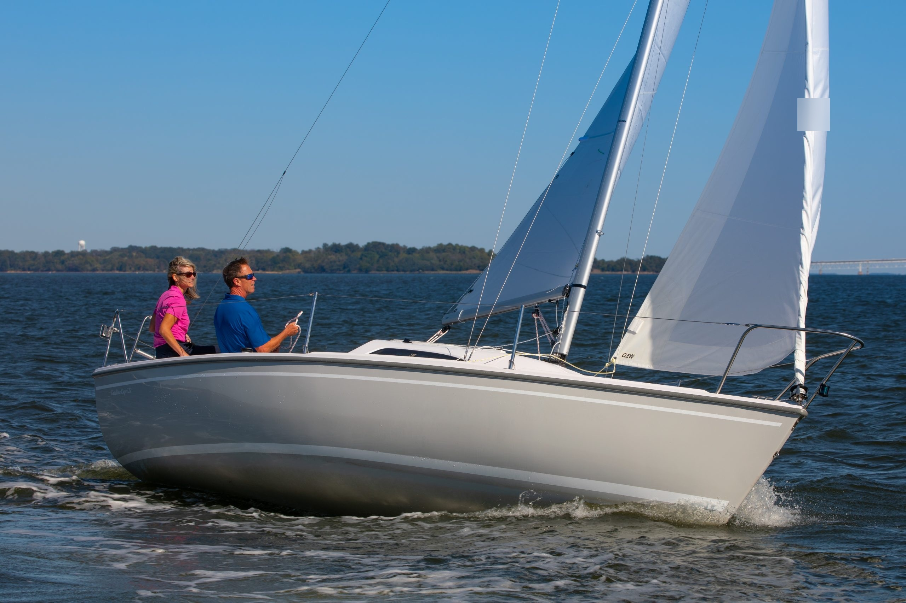
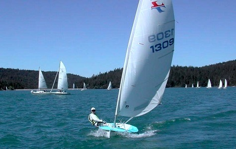

PNW AYSC
Pacific Northwest Asian Youth Sailing Club
The boats that power our program

A versatile 22-foot keelboat with a roomy cockpit, perfect for small-group sessions where coaches and students can work side by side. Its stable, self-righting keel makes it one of the most forgiving boats for learning fundamentals — from sail trim to crewing together as a team.
| Length Overall | 21 ft 6 in (6.55 m) |
| Beam | 7 ft 10 in (2.39 m) |
| Draft (board up) | 1 ft 10 in |
| Draft (board down) | 5 ft 0 in |
| Sail Area | 212 sq ft |
| Displacement | 2,250 lbs (1,020 kg) |
| Crew | Up to 5 |

A classic 8-foot single-handed pram dinghy that has introduced generations of young sailors to the sport. Light, simple, and forgiving, the El Toro lets beginners develop independent boat-handling skills and confidence at their own pace.
| Length Overall | 7 ft 10 in (2.38 m) |
| Beam | 3 ft 11 in (1.19 m) |
| Sail Area | 38 sq ft |
| Weight | 77 lbs (35 kg) |
| Mast Height | 10 ft 6 in |
| Crew | 1 (single-handed) |

A stable and responsive two-person dinghy purpose-built for youth sail training. The Minto's manageable size and balanced sail plan make it an excellent boat for practicing tacking, jibing, and crew coordination.
| Length Overall | 12 ft 0 in (3.66 m) |
| Beam | 4 ft 8 in (1.42 m) |
| Sail Area | 72 sq ft |
| Weight | 180 lbs (82 kg) |
| Hull Type | Fiberglass |
| Crew | 2 |

A nimble and exciting dinghy that rewards sailors who have built their core skills. The Benshee's lively performance and responsive helm make it a natural next step for developing sailors ready to push their abilities further and experience the full thrill of sailing on the water.
| Length Overall | 14 ft 0 in (4.27 m) |
| Beam | 5 ft 6 in (1.68 m) |
| Sail Area | 115 sq ft |
| Weight | 265 lbs (120 kg) |
| Hull Type | Fiberglass |
| Crew | 2 |